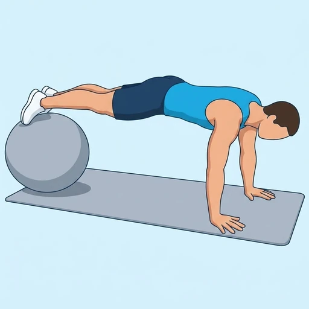

Ball Pike
An advanced core exercise where the hips pike up while the feet roll a stability ball toward the chest.
Core · Stability Ball · Advanced


Muscles worked by the Ball Pike
Primary
Secondary
Also called: oblique, obliques, side abs, external oblique, internal oblique, abs.
Equipment
Also called: swiss ball, exercise ball, yoga ball, physio ball, gym ball, balance ball.
How to do the Ball Pike
- Place the shins on a stability ball and hands on the floor in a high plank.
- Brace the core and keep the legs straight.
- Pike the hips up, rolling the ball toward the chest as the body forms an inverted V.
- Pause briefly at the top.
- Roll the ball back out to the starting plank.
Form tips
- Keep the legs straight throughout — no knee bend.
- Move at the hips, not the lower back.
- Build up with knee tucks first if the pike is too hard.
At a glance
| Body part | Core |
|---|---|
| Category | Strength |
| Force type | Pull |
| Mechanic | Compound |
| Difficulty | Advanced |
| Equipment | Stability Ball |
| Goals | Hypertrophy, Strength |
| Tags | Core focus |
| MET | 6.0 (metabolic equivalent, for calorie estimates) |
| Unilateral | No |
| Bodyweight | No |
| Dataset id | ball-pike |
Ball Pike in German & Spanish
| German | Ball Pike |
|---|---|
| Spanish | Pike con Pelota |
Descriptions, instructions and tips ship in all three languages in the JSON.
Related exercises
Exercise data (JSON)
The record below is exactly what exercises.json ships for this exercise — names, descriptions, instructions and tips in English, German and Spanish.
{
"id": "ball-pike",
"name_en": "Ball Pike",
"name_de": "Ball Pike",
"name_es": "Pike con Pelota",
"description_en": "An advanced core exercise where the hips pike up while the feet roll a stability ball toward the chest.",
"description_de": "Eine fortgeschrittene Rumpfübung, bei der die Hüfte aufklappt, während die Füße den Gymnastikball zur Brust rollen.",
"description_es": "Un ejercicio avanzado de core en el que las caderas se elevan mientras los pies ruedan una pelota suiza hacia el pecho.",
"category": "strength",
"force_type": "pull",
"mechanic": "compound",
"difficulty": "advanced",
"equipment": "stability_ball",
"body_part": "core",
"primary_muscles": [
"obliques",
"rectus_abdominis"
],
"secondary_muscles": [
"anterior_deltoid",
"hip_flexors",
"serratus_anterior"
],
"goals": [
"hypertrophy",
"strength"
],
"tags": [
"core_focus"
],
"is_unilateral": false,
"is_bodyweight": false,
"instructions_en": [
"Place the shins on a stability ball and hands on the floor in a high plank.",
"Brace the core and keep the legs straight.",
"Pike the hips up, rolling the ball toward the chest as the body forms an inverted V.",
"Pause briefly at the top.",
"Roll the ball back out to the starting plank."
],
"instructions_de": [
"Lege die Schienbeine auf einen Gymnastikball, Hände im Hochstütz auf dem Boden.",
"Spanne den Rumpf an und halte die Beine gestreckt.",
"Klappe die Hüfte auf, rolle den Ball zur Brust, der Körper bildet ein umgekehrtes V.",
"Halte oben kurz inne.",
"Rolle den Ball zurück in die Plank-Position."
],
"instructions_es": [
"Coloca las espinillas sobre una pelota suiza y las manos en el suelo en plancha alta.",
"Activa el core y mantén las piernas rectas.",
"Eleva las caderas, rodando la pelota hacia el pecho hasta formar una V invertida.",
"Pausa brevemente arriba.",
"Rueda la pelota de vuelta a la posición inicial de plancha."
],
"tips_en": [
"Keep the legs straight throughout — no knee bend.",
"Move at the hips, not the lower back.",
"Build up with knee tucks first if the pike is too hard."
],
"tips_de": [
"Halte die Beine durchgehend gestreckt — kein Knieanwinkeln.",
"Bewege dich aus der Hüfte, nicht aus dem unteren Rücken.",
"Baue zuerst mit Knee Tucks auf, wenn der Pike zu schwer ist."
],
"tips_es": [
"Mantén las piernas rectas todo el tiempo — sin doblar las rodillas.",
"Mueve desde la cadera, no desde la zona lumbar.",
"Trabaja primero con flexiones de rodilla si el pike es demasiado difícil."
],
"met": 6.0,
"images": {
"flat": {
"start": "images/flat/ball-pike-start.webp",
"peak": "images/flat/ball-pike-peak.webp"
}
}
}Fetch just this exercise
const { exercises } = await fetch(
"https://exercise-dataset.com/exercises.json"
).then(r => r.json());
const ex = exercises.find(e => e.id === "ball-pike");Free for personal and commercial in-app use with attribution (“Exercise data by RepDB”) — see the license and ready-made attribution snippets. Redistributing the data as a dataset or API is not permitted.